AO17 CS
Компьютерлік ғылымға кіріспе
Екі бөлім, бір жол. Бірінші бөлімде он екі аптада логикадан жүйеге дейін жүресің: ұғымды түсіндірме мен комикстен аласың, кодты өзің жазасың. Екінші бөлімде технологияның ішіне кіресің: процессордың, желінің, дерекқордың, нейрон желінің ішін 3D симуляцияда көріп, өлшейсің. Қазақ тілінде, тегін, браузерде.
- 2бөлім
- 280сабақ
- 1573тапсырма мен тест
- 12комикс эпизоды
- 113D зертхана
- ≈157сағат
1-аптадан бастау 2-бөлім: 3D зертхана Комикстер Курс мұқабалары Оқу кестесі Фильм: 36 секунд
Курс картасы
Курс - бір жол: 12 аптадан кейін 3D зертханаларға өтесің. Бекетті басса, сол апта не зертхана ашылады; үзік сызық - аптада қолданылатын 3D зертхана (бекетті нұсқағанда жанады).
аяқталдыбасталдыкелесі қадам
1-бөлімНегіз: 12 апта
Әр апта үш қадаммен жүреді
- Түсін
Кино-түсіндіру, комикс және теория: ұғым күнделікті өмір мысалынан басталып, дәлелмен бекиді.
- Көр
3D зертхана: процессордың, жадтың, алгоритмнің ішін 3D симуляцияда көріп, параметрін өзгертесің; әр сабақтың толық дәрісі мен тесті бар.
- Жаса
AO17 Judge тапсырмалары және модуль жобасы: кодты өзің жазасың, тест бірден тексереді.
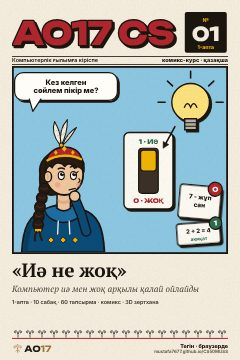
Апта1
- КомиксИә не жоқ
- 3D зертхана
Логикалық элементтер: AND, OR, NOT, «Қара жәшік»: жасырын ережені тап
- Сынақ
- Жоба
Логикалық өрнек талдағышы Logic Expression Analyzer
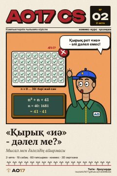
Апта2
- КомиксҚырық «иә» - дәлел ме?
- 3D зертхана
- Сынақ
- Жоба
Дәлелдеу қадамдарының жаттықтырғышы Proof Steps Trainer
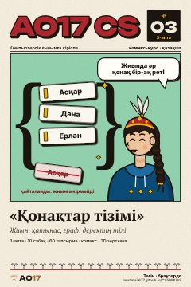
Апта3
- КомиксҚонақтар тізімі
- 3D зертхана
- Сынақ
- Жоба
Жиын амалдарының зертханасы Set Operations Laboratory
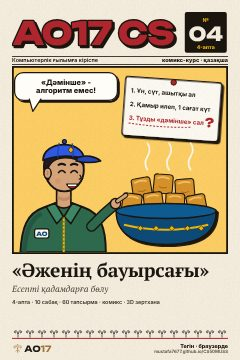
Апта4
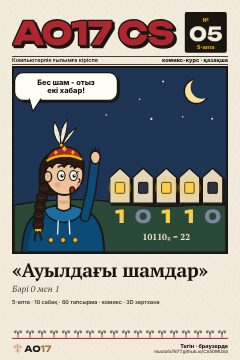
Апта5
- КомиксАуылдағы шамдар
- 3D зертхана
- Сынақ
- Жоба
Екілік ақпарат құралдары Binary Information Toolkit
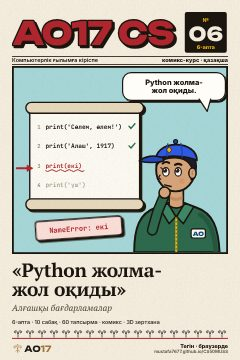
Апта6
- КомиксPython жолма-жол оқиды
- 3D зертхана
«Ретке келтір»: код жолдарын құрастыр, «Бір басудың саяхаты»: перне басылғанда не болады
- Студия
- Ойын
- X-RAY
- Сынақ
- Жоба
Python деректер калькуляторы Python Data Calculator
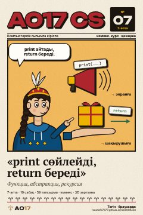
Апта7
- Комиксprint сөйлейді, return береді
- 3D зертхана
- Студия
- Ойын
- X-RAY
- Сынақ
- Жоба
Рекурсивті өрнектерді зерттеуші Recursive Pattern Explorer
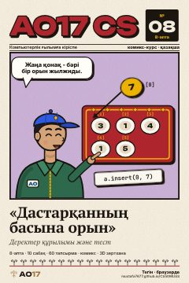
Апта8
- КомиксДастарқанның басына орын
- 3D зертхана
- X-RAY
- Сынақ
- Жоба
Деректі тексеру құралдары Data Validation Toolkit
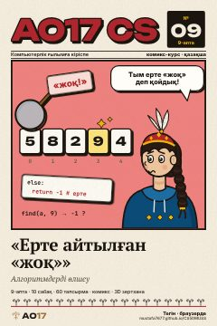
Апта9
- КомиксЕрте айтылған «жоқ»
- 3D зертхана
Selection және Insertion sort, Quick sort, Дейкстра алгоритмі
- Студия
- Ойын
- X-RAY
- Сынақ
- Жоба
Алгоритмдерді өлшеу зертханасы Algorithm Benchmark Laboratory
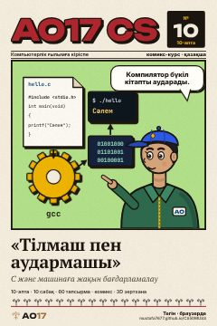
Апта10
- КомиксТілмаш пен аудармашы
- 3D зертхана
- Сынақ
- Жоба
C тіліндегі сандарды өңдеу құралы C Numeric Processing Tool
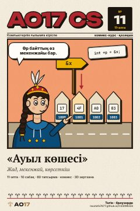
Апта11
- КомиксАуыл көшесі
- 3D зертхана
- Сынақ
- Жоба
Жад мекенжайларын зерттеуші Memory Address Explorer
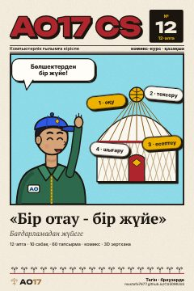
Апта12
- КомиксБір отау - бір жүйе
- 3D зертхана
- Сынақ
- Жоба
Python мен C: салыстырмалы есептеу жобасы Python–C Comparative Computing Project
1-бөлімнің қорытынды жобасы
Он екінші аптаның жобасы - «Python мен C: салыстырмалы есептеу жобасы»: бөлімнің бәрін бір жүйеге жинайсың. Деректі оқитын, тексеретін, есептейтін және нәтиже шығаратын компоненттерді Python мен C-да жазып, екеуін тестпен салыстырасың. Жобаны мұғалім рубрикамен бағалайды.
2-бөлімТехнологияның ішінен: 11 зертхана
Бірінші бөлімде бит, код және жад туралы білгеніңді енді нақты жүйенің ішінде көресің. Әр сабақ: кино-түсіндіру, дәріс, алдымен болжау, 3D симуляциядағы тапсырма, тест, шешілген мысал және «қатені тап». Әр зертханада есептер жинағы бар: нұсқаулықсыз, тек спецификация мен автотексеруші. Зертханалар ұсынылатын ретпен тұр: архитектура мен алгоритмдер қалғанының негізі, бірақ кез келгенінен бастауға болады.

Компьютер архитектурасы Computer Architecture
CPU, жады және екілік сандар
15 сабақ · 84 тест сұрағы · ≈6 сағат
Бірінші сабақ: Екілік жүйе

Алгоритмдер Algorithms
Графтар мен сұрыптауды қадаммен бақыла
15 сабақ · 78 тест сұрағы · ≈6 сағат
Бірінші сабақ: Іздеу

Математика Mathematics
Университеттің 1-курсы: векторлар, матрицалар, анализ 3D-де
10 сабақ · 40 тест сұрағы · ≈4 сағат
Бірінші сабақ: Векторлар және олармен амалдар

Компьютерлік желілер Computer Networks
DNS, TCP және пакеттердің маршруты
15 сабақ · 78 тест сұрағы · ≈6 сағат
Бірінші сабақ: Пакеттер мен қабаттар

Веб-әзірлеу Web Development
Request серверден браузерге дейін қалай жүретінін көр
15 сабақ · 94 тест сұрағы · ≈5 сағат
Бірінші сабақ: Интернет қалай жұмыс істейді

Дерекқорлар Databases
Индекстер, транзакциялар, query optimizer
15 сабақ · 72 тест сұрағы · ≈6 сағат
Бірінші сабақ: Кестелер және SELECT

Киберқауіпсіздік Cybersecurity
Шифрлау мен аутентификацияны қорғау зертханасында
15 сабақ · 84 тест сұрағы · ≈5 сағат
Бірінші сабақ: Цезарь шифры

Бұлт және DevOps Cloud & DevOps
Контейнерлер, Kubernetes, CI/CD
15 сабақ · 68 тест сұрағы · ≈5 сағат
Бірінші сабақ: Контейнерлер

Жасанды интеллект AI & Machine Learning
Нейронды өз қолыңмен баптап, желіні нақты үйрет
15 сабақ · 100 тест сұрағы · ≈5 сағат
Бірінші сабақ: Дерек және деректер жиыны

Ойын әзірлеу Game Development
Game loop, физика және камера ішінен
15 сабақ · 84 тест сұрағы · ≈5 сағат
Бірінші сабақ: Ойын объектілері

Робототехника және IoT Robotics & IoT
Сенсорлар мен контроллерлер симуляциясы
15 сабақ · 72 тест сұрағы · ≈5 сағат
Бірінші сабақ: Датчиктер және АЦП
БағалауСынақтар, емтихан және сертификат
Білімді тексерудің ең сенімді жолы - еске түсіру. Әр аптаның соңында қысқа сынақ, бөлімнің соңында емтихан, ал курстың соңында қорытынды емтихан бар. Сұрақтар 1142 сұрақтық қордан кездейсоқ таңдалады, сондықтан әр жолы басқаша.
- Апта сынағы
12 апта, әрқайсысында 8 сұрақ: аптаның сабақтарынан және сол аптаның 3D зертханасынан. Уақыт шектелмейді, әр жауаптан кейін түсіндірмесі шығады.
1-апта сынағынан бастау - Бөлім емтихандары
1-бөлім: 24 сұрақ, 2-бөлім: 22 сұрақ, әрқайсысы 30 минут. Нәтиже апта мен зертхана бойынша талданады.
1-бөлім емтиханы2-бөлім емтиханы - Қорытынды емтихан
Екі бөлімнен 36 сұрақ, 45 минут, өту шегі 70%. Бет жаңартылса, емтихан тоқтаған жерінен жалғасады.
Емтиханға өту - Сертификат
Қорытынды емтиханнан өткен соң атың жазылған AO17 CS сертификаты ашылады: басып шығаруға не PDF ретінде сақтауға болады.
Сертификат
Python алаңыКодпен ойна
Сабақтағы Python бірден көрінетін нәтижеге айналатын үш орта. Бота әлемінде код Ботаны жүргізеді, Ою студиясында қазақ оюын салады, ал X-RAY кодтың өз ішін көрсетеді. Үшеуінде де код браузерде нағыз Python-да орындалады: қате жолы белгіленеді, себебі қазақша түсіндіріледі.

Бота әлемі
16 деңгей: тізбек, функция, for, while, if және лабиринт алгоритмі. «Болжап көр» бөлімінде кодты іске қоспай оқып, Бота қайда тоқтайтынын болжайсың, ал «Өз әлемің» бөлімінде әлемді өзің салып, досыңа жібересің.
Бірінші деңгейден баста
Ою студиясы
8 тапсырма: цикл, функция, симметрия және рекурсия суретке айналады. «Суретті болжа» бөлімінде кодты оқып, қай сурет шығатынын таңдайсың.
Шаршыдан баста
AO17 X-RAY
Кодтың ішіне қара: AST, байт-код, шақыру стегі және рекурсия ағашы бір уақыт жолағында. Айнымалының атын бассаң, оның мәні жазылған нұсқауға кері ораласың.
Факториалдан баста
Оқу тактикаларыҚалай оқыған дұрыс
Көп оқу мен дұрыс оқу - екі бөлек нәрсе. Оқу ғылымы тексерген сегіз тактика: еске түсіру, аралық қайталау, араластыру, түсіндіру, ұқсастық, сөз бен сурет, фокус және өзіңді бағалау. Әрқайсысын бірден жаттықтыратын құрал бар: ми төккіш, ұмыту қисығы, жаргон детекторы, 24 ұқсастық, фокус таймері.
Жиі қойылатын сұрақтар
Курс кімге арналған?
Бағдарламалауды нөлден бастағысы келетін оқушы мен студентке. Алдын ала білім керек емес: бірінші апта логикадан, «иә» мен «жоқтан» басталады.
Ақылы ма?
Жоқ. Курс тегін, тіркеусіз ашылады. Прогресс осы құрылғыда сақталады, оны кабинеттен басқа құрылғыға көшіруге болады.
Екі бөлімнің айырмасы неде?
Бірінші бөлім - іргетас: логика, дәлелдеу, алгоритм, Python, C және жад, әр аптада өзің жазатын код пен жоба. Екінші бөлім - 11 зертхананың 160 сабағы: әрқайсысында кино-түсіндіру, толық дәріс, тест, шешілген мысал және 3D симуляция бар. Материалдар AO17 командасының INSIDE TECH 3D платформасынан алынған. 3D зертханадағы оқу күндері «Менің шаңырағым» бетіндегі серияға да қосылады.
Тапсырмалар қалай тексеріледі?
Браузерде, бірден: Python коды AO17 Judge-де нағыз тестпен тексеріледі, C мысалдарының шығысы сайтты құрастыру кезінде gcc арқылы алынған, 3D зертхананың тесттері жауапты түсіндірмесімен береді. Модуль жобасын мұғалім рубрикамен бағалайды.
Сертификат бере ме?
Иә. Қорытынды емтиханда кемінде 70% алсаң, атың жазылған AO17 CS сертификаты ашылады. Ол AO17 платформасындағы оқу нәтижесін растайды; ресми білім туралы құжат емес.
Прогресім қайда көрінеді?
Осы беттің өзінде: әр аптаның және әр зертхананың астында аяқталған сабақтар саны шығады, ал «Жалғастыру» батырмасы тоқтаған жеріңе апарады. Деректер тек осы браузерде сақталады.